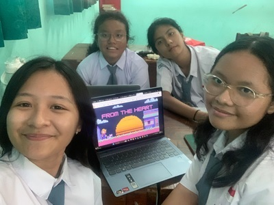

Welcome to From The Heart, your trusted destination for exploring the depths of love through our unique Love Meter. At From The Heart, we believe that love is a universal language that transcends boundaries and connects souls in profound ways. Our Love Meter is more than just a tool—it's a beacon of insight and understanding that helps you gauge the strength and compatibility of your relationships. Whether you're embarking on a new romance or nurturing a long-term partnership, our Love Meter provides personalized assessments to illuminate the dynamics at play and guide you towards deeper connection and fulfillment. Driven by a passion for helping hearts unite, our team at From The Heart is dedicated to providing you with accurate, insightful, and compassionate guidance on matters of love and relationships. We understand that every love story is unique, and our mission is to empower you to navigate the twists and turns of romance with confidence and clarity. So, whether you're seeking validation for a budding romance, reassurance about the strength of your bond, or simply curious about the compatibility between you and your partner, trust in From The Heart to be your trusted companion on the journey through love. Let our Love Meter be your guide as you explore the boundless depths of the heart.
THE TEAM Meet the heart-centered individuals who power our Love Meter and guide you on your journey through the realms of romance : 💝 Jelita Lusia as The Web Developer A web developer is a programmer who develops World Wide Web applications using a client–server model. The applications typically use HTML, CSS, and JavaScript in the client, and any general-purpose programming language in the server. source : wikipedia 💝 Jessica Rachel as The App Developer An app developer uses programming languages and development skills to create, test, and develop applications on mobile devices. They work in popular operating system environments like iOS and Android and often take into account UI and UX principles when creating applications. source : toptal 💝 Carina Yosephine as The Content Writer A web content writer is a person who specializes in providing content for websites. Content should contain keywords (specific business-related terms, which internet users might use in order to search for services or products) aimed towards improving the website. source : wikipedia 💝 Elisabeth Anju as The Graphic Designer A graphic designer is a professional who practices the discipline of graphic design, either within companies or organizations or independently. They are responsible for planning, designing, projecting, and conveying messages or ideas through visual communication. source : wikipedia Together, Jelita, Jessica, Carina, and Anju form the beating heart of From The Heart, united in their mission to help you navigate the twists and turns of love with grace, wisdom, and compassion. Trust in our team to light up your path to love and happiness, one heartbeat at a time.